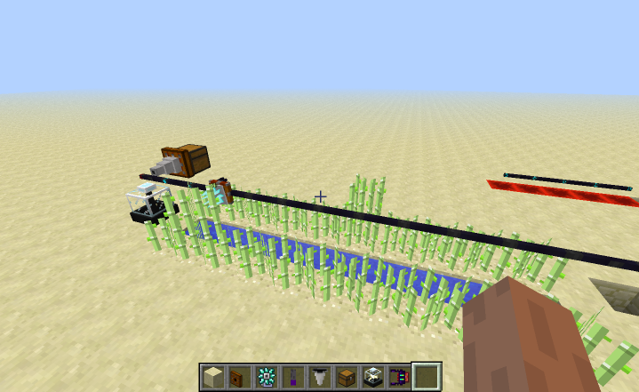
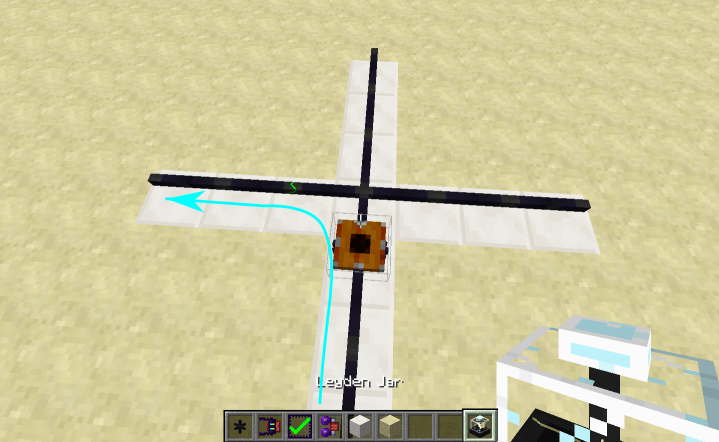
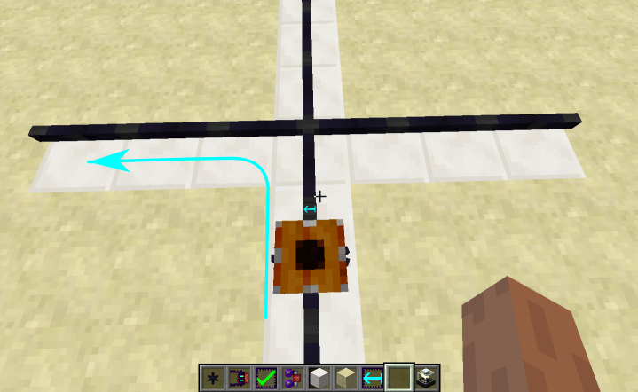
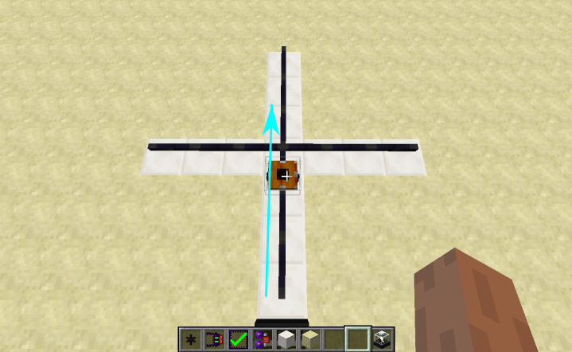
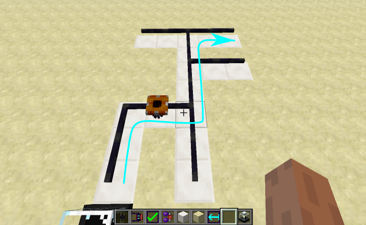
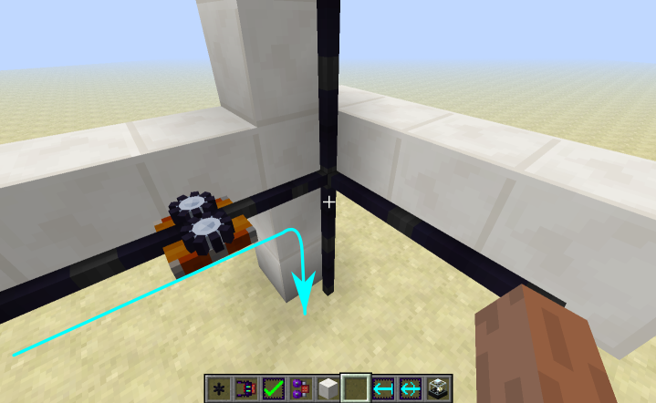
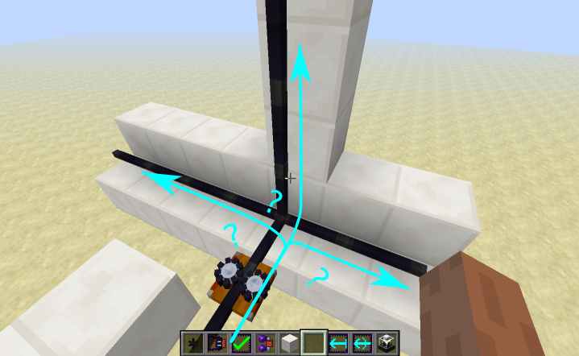
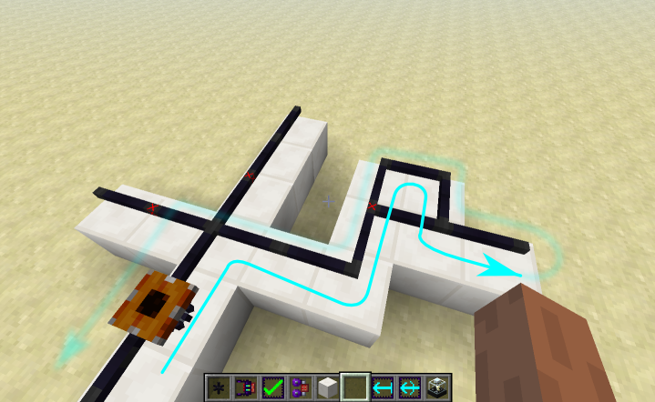
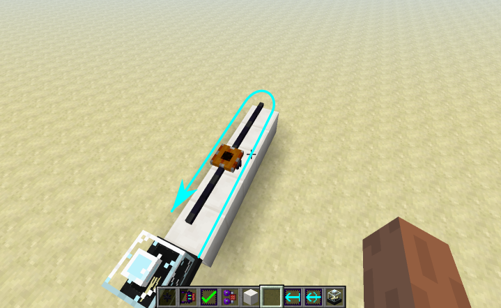

Servos

Servos are entities that ride on Servo Rail.
They can be equiped with a socket tool, and provide a four-slot inventory.
Servo Rail
Servo rail is the conductive wire that servos ride on. Charge is drawn from the servo rails to power the servo and its socket tool.
Instructions (and decorators) can be placed on servo rail.
Servos travel along the servo rail, and execute instructions as they pass over them.
Instructions
Instructions can be placed infinitely on servo rails.
The Logic Matrix Programmer is used to modify and remove them.
Shift-right clicking with an LMP will remove it from the rail.
Right clicking an instruction will cycle through variants of the instruction, if that instruction has them.
Clicking on an instruction empty-handed may show a notification indicating its state.
For details on specific instructions, see the Instructions page.
Decorators
Decorators are similar to instructions, except they are single-use.
Presently the only decorators are the three grates; their purposes is to plug up holes in the floor.
Servo Motion
When confronted with a rail junction, the servo has a choice of which direction to go.
If there is an entry control  instruction, it will go that way.
instruction, it will go that way.

If it had encountered a  pointing in a direction that it could not take, it will go in that direction.
pointing in a direction that it could not take, it will go in that direction.

It prefers to go straight.

It tries to go in the direction it was moving previously (this makes it zig-zag).
For example, if it reaches a T intersection after a left turn, it will go right.

If it can not go straight, then it will try to go up (relative to the servo).

Failing that, it will go randomly choose right, left, or down (again, relative to the servo).

It avoids going through a forbidding entry control  ; this is the second-to-last resort.
; this is the second-to-last resort.

It won't go backwards unless it is at a dead-end.

(Probably.)
Computation
Not yet implemented.
Each servo has 16 seperate stacks, one for each wool color in Minecraft.
Each stack can hold 16 values.
Looking at a servo while holding an LMP will show the contents of the stacks.
At present only two stacks are used.
The yellow stack is used for values, and the black stack is used for error messages.
Examples
[sorting system; sugar cane harvester...]